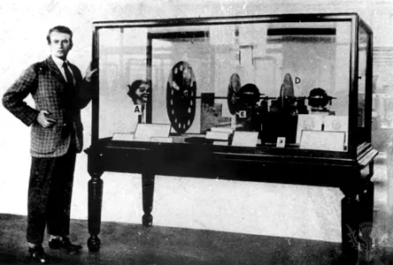
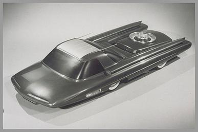
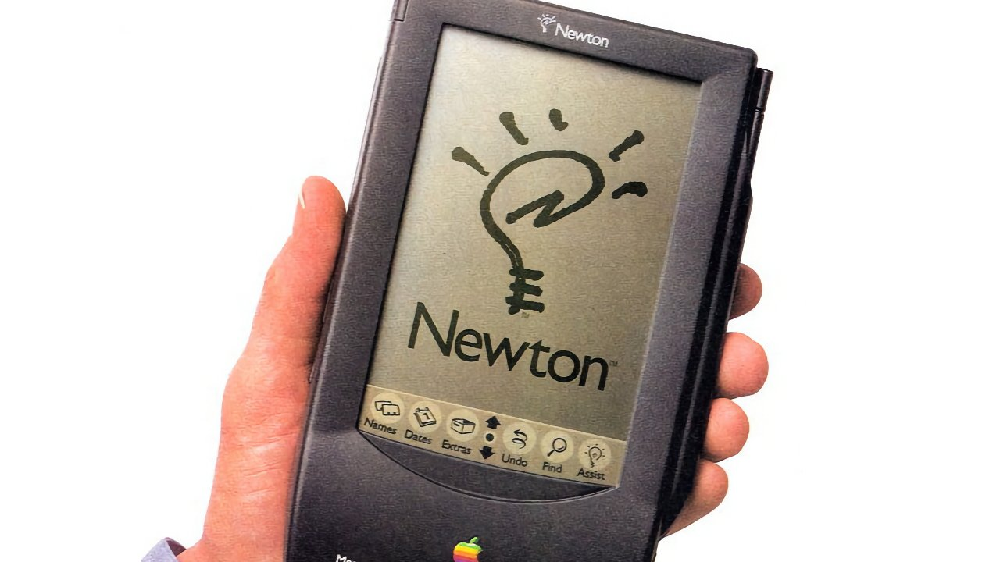
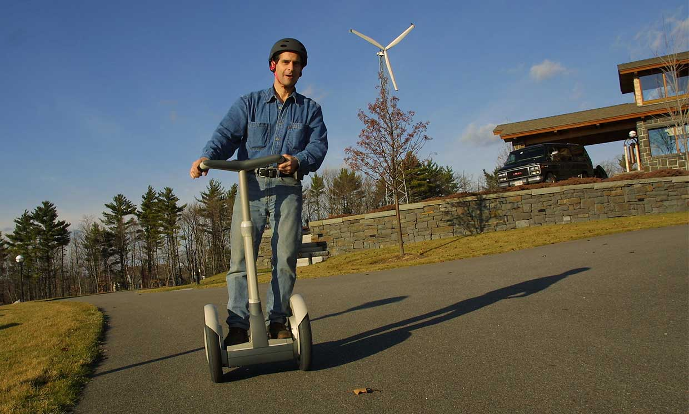

Historical Timeline
1840: Atmospheric Railway

Isambard Kingdom Brunel develops a railway system powered by atmospheric pressure instead of steam locomotives.
Learn More1876: Mechanical Television
German inventor Paul Nipkow patents the electromechanical television system using a spinning disk with holes to scan images.
1907: Pneumatic Tube Transport
Pneumatic tube networks for transporting people were proposed and partially developed but never fully implemented.
1939: Nuclear-powered Car
Ford unveils the "Nucleon," a concept car designed to be powered by a small nuclear reactor instead of gasoline.
1955: Nuclear Aircraft

Both the US and Soviet Union invest heavily in developing nuclear-powered aircraft that promise unlimited range.
Learn More1970: The Picturephone

Bell Labs launches the first commercial video telephone service but fails to gain market traction.
Learn More1975: Betamax

Sony introduces the Betamax video format, which despite technical superiority loses to VHS in the market.
Learn More1993: Apple Newton
Apple's early personal digital assistant (PDA) introduces handwriting recognition but struggles with accuracy issues.
2001: Segway
The Segway Personal Transporter is launched with enormous hype but fails to revolutionize transportation as predicted.
2013: Google Glass
Google's ambitious augmented reality eyewear faces privacy concerns and social acceptance challenges.
What If? Alternative Timelines
How might our world be different if these forgotten technologies had succeeded?
If Nuclear Aircraft Had Succeeded
Commercial flights might have unlimited range with no need to refuel, potentially transforming global travel and trade. However, safety concerns and environmental impacts would have created significant challenges.
If Betamax Had Won the Format War
The higher quality Betamax standard might have accelerated developments in home video technology, potentially leading to earlier adoption of high-definition video content in the consumer market.